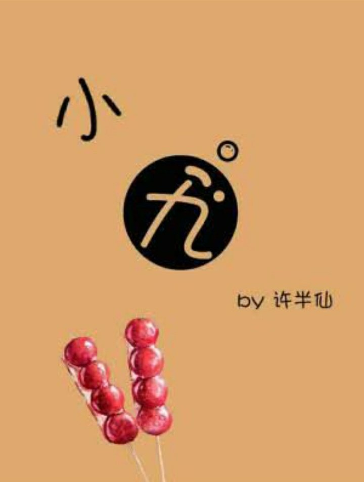

Aunque Xiao Jiu es el más joven de los nueve príncipes, también es el más talentoso. Sin embargo, dedica toda su energía a acercarse a Yan-daren. Yan-daren es frío y distante, pero el adorable principito hará todo lo posible por romper su hielo.